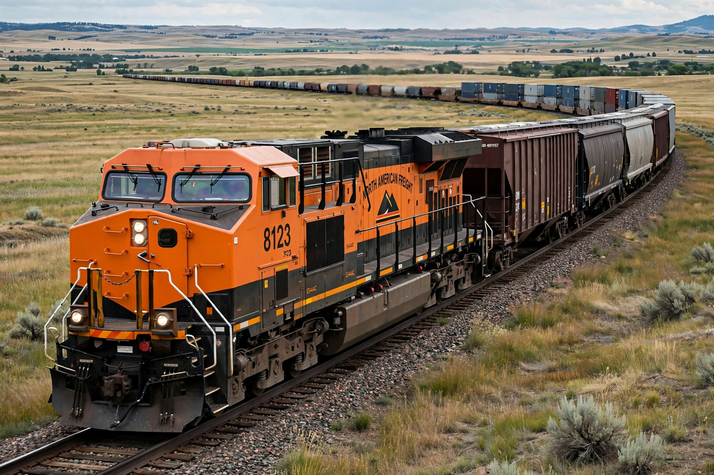

Locomotive
From Wikipedia, the free encyclopedia

A diesel-electric freight locomotive.A locomotive is a self-propelled rail vehicle that provides the motive power for a train, hauling (or pushing) unpowered cars carrying passengers or freight. Locomotives began with steam in the early 19th century, were largely replaced by diesel and electric traction in the 20th, and remain the defining machine of rail transport worldwide.
History
The first full-scale working railway steam locomotive was built by Richard Trevithick in 1804. George Stephenson\'s Locomotion No. 1 (1825) and Rocket (1829) established the basic form: boiler, cylinders driving coupled wheels, and a separate tender for fuel and water on larger engines.
Steam locomotives
A steam locomotive burns fuel — usually coal, oil or wood — to boil water in a boiler; the steam drives pistons connected to the driving wheels. Steam dominated railways for over a century and reached its peak in giants such as the Union Pacific \'Big Boy\'.
Diesel and electric
Diesel locomotives, mostly diesel-electric types in which a diesel engine drives a generator feeding electric traction motors, replaced steam from the 1930s. Electric locomotives draw power from overhead catenary or a third rail and offer high power and acceleration, dominating busy passenger networks and high-speed lines.
Multiple units
In a multiple unit, traction equipment is distributed under several passenger cars, so no separate locomotive is needed; most modern metro, suburban and high-speed trains, such as the Shinkansen, use this arrangement.